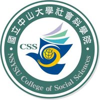
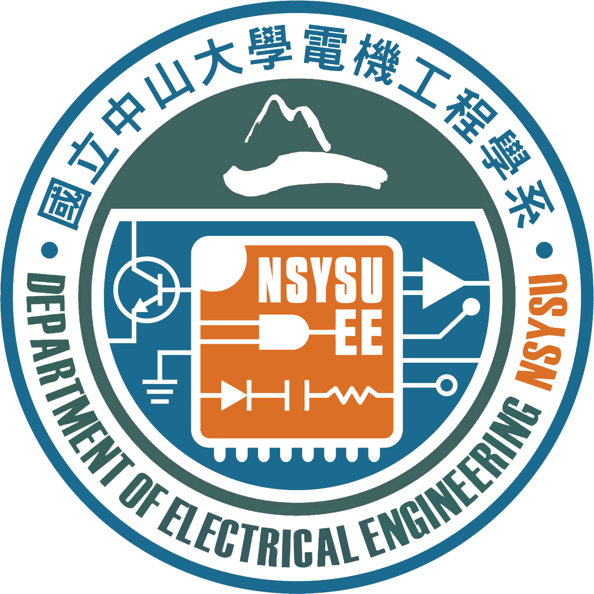
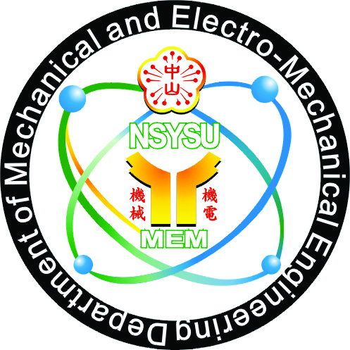
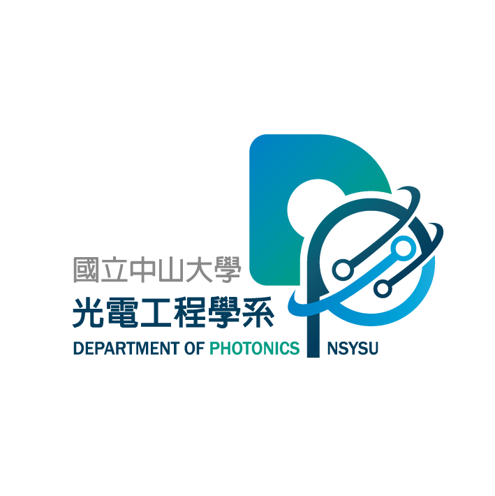

🔔
請使用校園帳號登入！
登入
國立中山大學
myNSYSU
中文版
English
常用服務
聯絡我們
最新消息
搜尋
十大熱門服務
>
教務資訊服務網
成績與名次查詢
學生請假(學生)
到勤差假申請/簽核
付款查詢暨付款通知
導生綜合資料
NSYSU Mail 服務

研究計畫兼任助理學生專區
近期新增服務
>
領域專長查詢系統

跨領域實習 - 引路人計畫

學生聘僱查詢系統

本校生校際選課系統
中山新課程網
成績與名次查詢及探索學分申請
學籍資料查詢及下載
aCARE 學習預警暨輔導追蹤系統
各單位服務
>
教務處
學生事務處
總務處
國際事務處